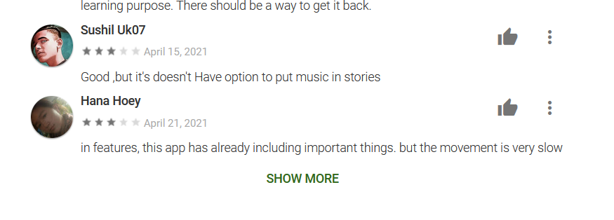
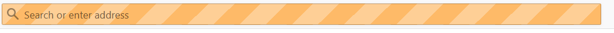
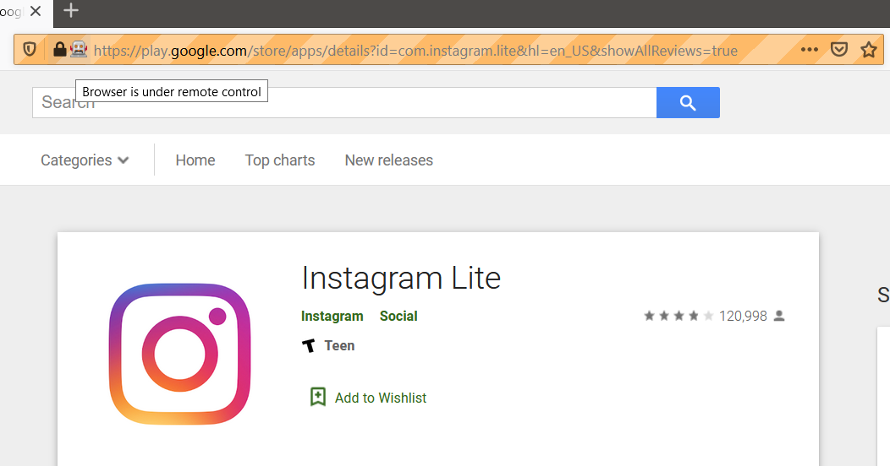
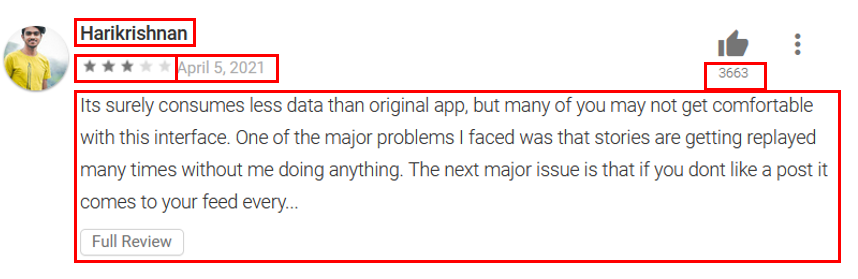

I’ve used rvest in numerous posts to scrape information from static websites or through forms to get data. However, some websites don’t have static data that can be downloaded by just scraping the HTML. Google Play Store reviews are one of these sources.
Reviews on the Google Play Store have what I call a semi-infinite scroll where as you reach the bottom of the page, the site will load the next batch of reviews. However, a special wrinkle in the Play Store page is that after a few loads, the user will be prompted again to click a button to load the next batch of reviews.

Selenium is a tool that automates a browser. Its often used for writing automated tests for websites but in this instance it can be used to mimic a user’s browser behavior to load up a bunch of Play Store reviews to the screen before we can then scrape using rvest in the conventional fashion.
Selenium and its R package RSelenium allows a user to interact with a browser through their programming language of choice. Since this is an R blog, I’ll be using R to control the browser.
Instagram Lite is a recently launched product whose “goal was to offer a smaller download that takes up less space on a mobile device — a feature that specifically caters to users in emerging markets, where storage space is a concern”. Since this is a relatively new product it would be fun to see how its doing. This first post will cover how to use RSelenium to actually get the data and the analysis will be covered in a follow-up post.
The four libraries used for this data acquisition project are RSelenium which will allow for manipulating a browser through R, tidyverse for constructing the data structure, lubridate to handle the dates in the reviews, and rvest to scrape the HTML after we’re done loading all the reviews with Selenium
library(RSelenium)
library(tidyverse)
library(lubridate)
library(rvest)A browser session gets started by called rsDriver from the RSelenium package. While RSelenium can work with Chrome, Firefox, or PhantomJS, I’ve personally found that working with Firefox is the path of least resistance. With Chrome you need to match the chromedriver versions between RSelenium and the Chrome browser and I’ve never successfully pulled that off. While with Firefox you can just set browser="firefox" and it just works.
The first time running RSelenium you can’t have check=F as it will download the drivers that it needs to work. After that first run you can set check=F to skip those checks. The verbose=F option is to suppress excess messaging.
The rsDriver function will start both a Selenium server and start the remote Firefox browser. It returns both a server and a client which will be assigned to remDr.
rD <- rsDriver(browser = "firefox",
port = 6768L,
#If Running RSelenium for the First Time, you can't have check =F
#since you'll need to download the appropriate drivers
check = F,
verbose = F
)
remDr <- rD[["client"]]If everything goes to plan a new Firefox window will open and the address bar will be “oranged” out.

This part is straight forward, I create a url variable with the desired URL as a string and then use the remote driver remDr to tell the browser to navigate to that page.
#Navigate to URL
url <- "https://play.google.com/store/apps/details?id=com.instagram.lite&hl=en_US&showAllReviews=true"
remDr$navigate(url)If all goes well the Firefox browser that had opened should now have loaded the Google Play page for Instagram Lite. There will also be a little robot icon on the address bar to show that the browser is under remote control.

This section is the meat and potato of working with Selenium where we’ll write a script to tell the browser what to do. The summary of what this code block will do is:
I repeat this loop 50 times to try to get enough data for analysis. If the browser isn’t running headlessly then you can switch to the remote browser window and watch everything in action (but be careful because manual intervention with the webpage can mess with the intended function of the script)
Figuring out the right classes for the button (RveJvd) took some guess and check work from inspecting the page, however, I believe all Google Play Review pages use the same classes so this could should be adaptable to other apps. But YMMV.
Note: I originally wanted to run this 100 times to try to get more reviews but I kept winding up with an error of unexpected end of hex escape at line 1 column 15497205 that I was unable to debug. So I stuck with 50. But if anyone knows how to avoid that error please let me know in the comments.
#Find Page Element for Body
webElem <- remDr$findElement("css", "body")
#Page to the End
for(i in 1:50){
message(paste("Iteration",i))
webElem$sendKeysToElement(list(key = "end"))
#Check for the Show More Button
element<- try(unlist(remDr$findElement("class name", "RveJvd")$getElementAttribute('class')),
silent = TRUE)
#If Button Is There Then Click It
Sys.sleep(2)
if(str_detect(element, "RveJvd") == TRUE){
buttonElem <- remDr$findElement("class name", "RveJvd")
buttonElem$clickElement()
}
#Sleep to Let Things Load
Sys.sleep(3)
}Now that we’ve scrolled and pushed buttons and scrolled some more to get a bunch of reviews to load on the screen its time to scrape the reviews.
We can extract the HTML from the remote browser using getPageSource() and readHTML().
##Scrape in HTML Objects
html_obj <- remDr$getPageSource(header = TRUE)[[1]] %>% read_html()Now that we have the HTML we no longer need the remote Firefox browser or Selenium server so we can shut those down. There have been issues with the Java process remaining open even after calling the stop server pieces so I issue a system command to kill the java process.
#Shut Down Client and Server
remDr$close()
rD$server$stop()
system("taskkill /im java.exe /f", intern=FALSE, ignore.stdout=FALSE)If we look at a single review, there are a number of different elements we’d like to extract.

This piece was a bit of guess and check working with rvest and looking at the CSS selectors on the page to identify the CSS classes for the pieces that I wanted and extract them with html_elements(), html_attr(), and html_text():
# 1) Reviewer Name
names <- html_obj %>% html_elements("span.X43Kjb") %>% html_text()
# 2) Number of Stars
stars <- html_obj %>% html_elements(".kx8XBd .nt2C1d [role='img']")%>%
html_attr("aria-label") %>%
#Remove everything that's not numeric
str_remove_all('\\D+') %>%
# Convert to Integer
as.integer()
#3) Date of Review
dates <- html_obj %>% html_elements(".p2TkOb") %>%
html_text() %>%
# Convert to a Date
mdy()
#4) How many helpful clicks
clicks <- html_obj %>% html_elements('div.jUL89d.y92BAb') %>%
html_text() %>%
#Convert to Integer
as.integer()For the text of the review itself there is one wrinkle. From the image above the beginning of the review is shown, but it is truncated. Then a button for “Full Review” would need to be clicked to show the full review. Fortunately, this shows up in the data as “
# 5) Full Text of the Review
reviews <- html_obj %>% html_elements(".UD7Dzf") %>% html_text()
###Deal with the "Full Review" Issue where text is duplicated
reviews <- if_else(
#If the review is truncated
str_detect(reviews, '\\.\\.\\.Full Review'),
#Grab all the Text After the string '...Full Review'
str_sub(reviews,
start = str_locate(reviews, '\\.\\.\\.Full Review')[, 2]+1
),
#Else remove the leading space from the review as is
str_trim(reviews)
)With each piece of the review individually extracted we’ll combine the vectors in a tibble and save the file for the analysis in the next part.
# create the df with all the info
review_data <- tibble(
names = names,
stars = stars,
dates = dates,
clicks = clicks,
reviews = reviews
)
saveRDS(review_data, 'data/review_data.RDS')
write_csv(review_data, 'data/review_data.csv')Just to make sure everything is working we’ll compare an actual review to our data:
review_data %>%
filter(names %in% c('Sushil Uk07', 'Hana Hoey')) %>%
knitr::kable()| names | stars | dates | clicks | reviews |
|---|---|---|---|---|
| Sushil Uk07 | 3 | 2021-04-15 | 0 | Good ,but it’s doesn’t Have option to put music in stories |
| Hana Hoey | 3 | 2021-04-21 | 0 | in features, this app has already including important things. but the movement is very slow |
And there you have it. We used Selenium to have a browser scroll for a while to load a bunch of reviews, extracted the data with rvest and then combined and saved the data. In the next post we’ll use this data to understand what downloaders think about Instagram Lite.
In this post the Firefox browser was actually loaded which is a useful way to see what the code is actually doing. But if you didn’t want to actually see the browser you could send extra parameters to the rsDriver function to not make the browser visible:
rsDriver(browser = "firefox",
port = 6768L,
check = F,
verbose = F,
#Run the Browser Headlessly
extraCapabilities =
list("moz:firefoxOptions" =
list(
args = list('--headless')
)
)
)